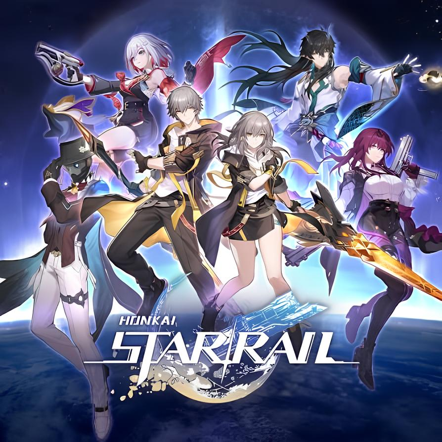
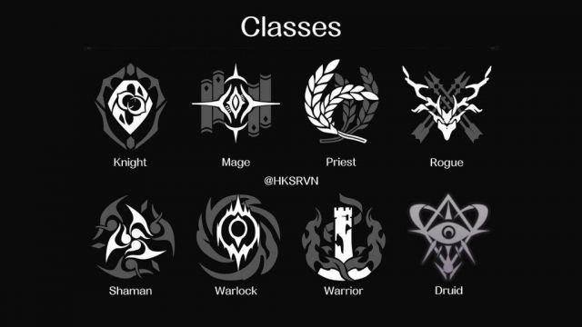
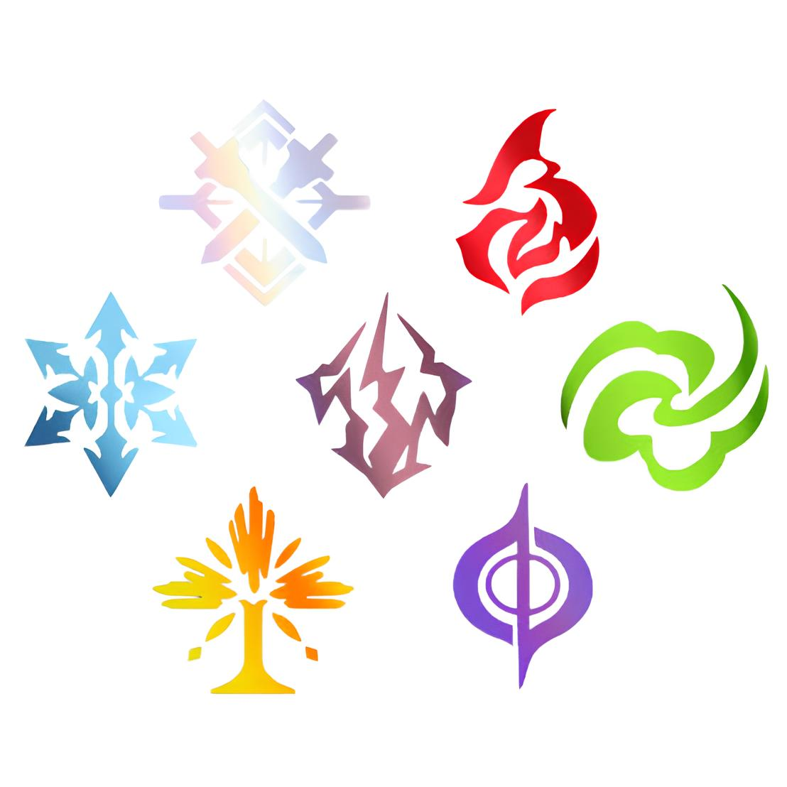
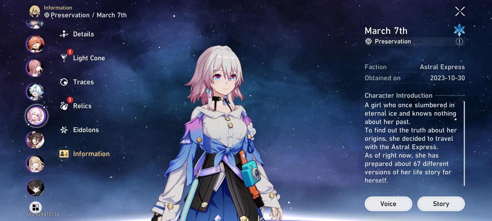
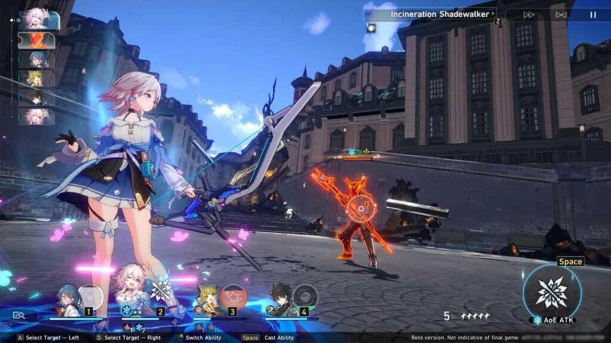

Jugabilidad por turnos
Los combates requieren elegir ataques y habilidades en orden táctico, similar a los juegos de rol clásicos.
Videojuego de rol (RPG) y estrategia por turnos de fantasía espacial.
Es un juego RPG de estrategia por turnos, con combates donde formas un equipo de personajes que atacan según un orden determinado por su velocidad, desarrollado por HoYoverse.
Sitio Oficial
Los combates requieren elegir ataques y habilidades en orden táctico, similar a los juegos de rol clásicos.
Viajas por la galaxia a bordo del Expreso Astral junto a otros personajes para resolver conflictos y descubrir los misterios de los Eones y los Stellarons.
Como otros juegos de HoYoverse, usa un sistema de invocación (gacha) para obtener nuevos personajes y armas (llamadas "Cadenas de Luz" o Light Cones).
Cada personaje pertenece a un elemento (Fuego, Hielo, Físico, etc.) y a un "Path" o camino (como Destrucción, Caza, Erudición, Armonía, Nihilidad, Preservación, Abundancia), que define su rol en combate (daño, soporte, tanque, etc.).



